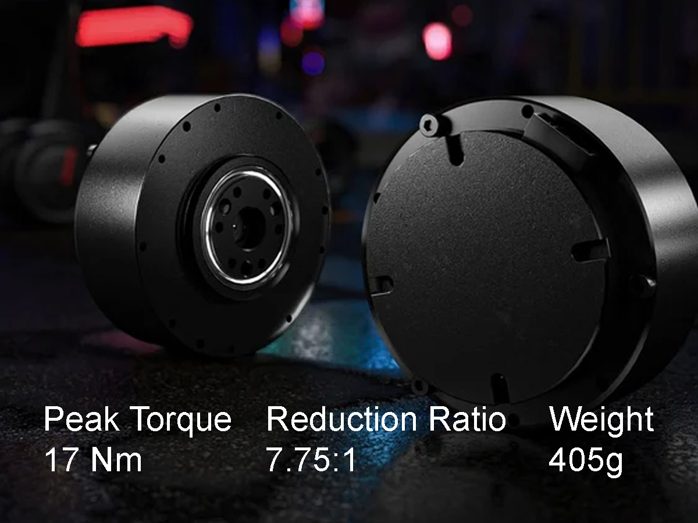
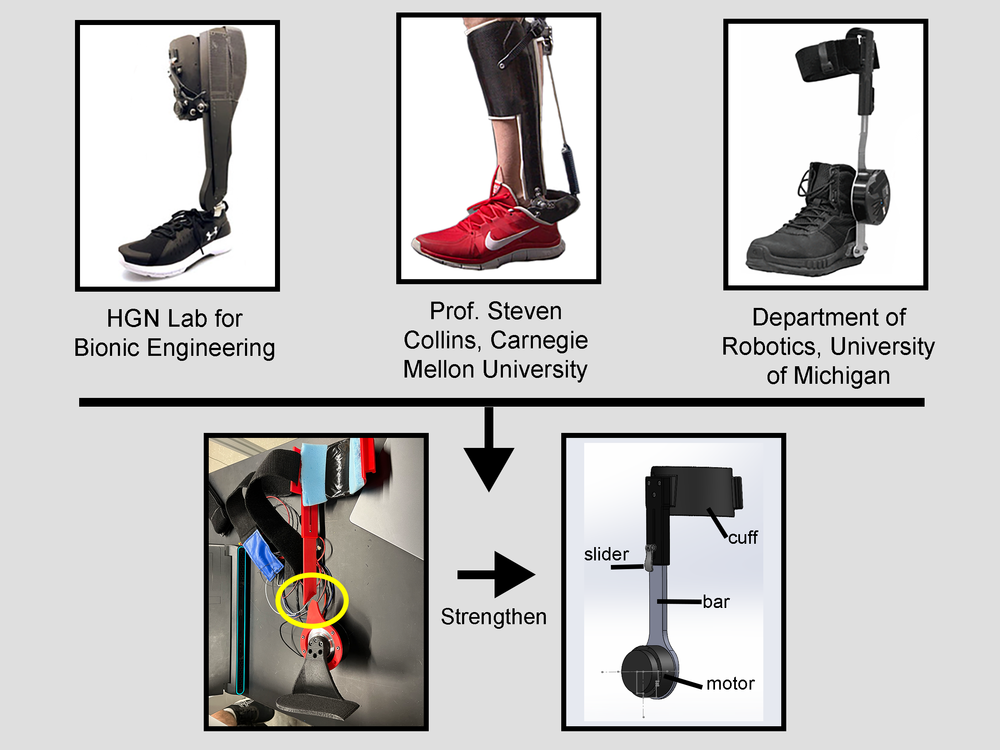

Torque Generation

Early in the project, we selected a quasi-direct-drive (QDD) architecture using a RobStride 02 actuator.
- High backdrivability. Low gear reduction minimizes friction and reflected inertia, allowing the exoskeleton to remain transparent when assistance is not being applied.
- Precise torque delivery. Direct ankle actuation eliminates transmission losses, enabling accurate, repeatable torque control—essential for evaluating gait assistance strategies and machine learning–based controllers.
- Bidirectional actuation. A single actuator generates both plantarflexion and dorsiflexion torque without the complexity of separate cable-driven systems.
- Mechanical simplicity. The compact and modular system allows for fast testing, assembly, and future design iterations.
Tradeoff: A motor directly at the ankle is distally massive. However, compact QDD actuators keep this penalty relatively small, and recent studies suggest that larger assistive torques do not necessarily produce better outcomes, meaning the motor can stay relatively lightweight.
Shank Connection

Unlike the foot interface, which underwent numerous iterations, the shank connection converged quickly.
A straight support extending from the actuator to an adjustable-height cuff provided a robust, lightweight solution, with later revisions focused primarily on improving strength and fit rather than changing the overall concept.
Foot Connection
Undoubtedly, the foot connection required the most iteration. With the torque generation architecture and shank interface established early on, development focused on two concepts pursued in parallel:
- An insertable footplate that fits inside an unmodified shoe.
- A modified shoe that became an integral part of the exoskeleton.
The insertable footplate was initially the preferred solution. It offered excellent modularity and required no permanent modifications to the user's footwear. However, repeated prototypes revealed that achieving the necessary stiffness and durability while maintaining a comfortable, ergonomic profile was not feasible using only 3D-printed components.
Regardless of the approach, the rigid structure needed to span from the heel to the ball of the foot. Otherwise, the shoe itself became the compliant element, reducing stiffness and torque transmission. The modified shoe ultimately proved to be the more robust solution. Of the modified-shoe approaches considered, the final design was also the simplest to manufacture, requiring only a single cut through the shoe while providing large bonding surfaces for a strong, straightforward load path. Because the structural components were attached directly to the shoe rather than placed beneath the foot, the design no longer needed to conform to the complex geometry of the sole, greatly simplifying fabrication. The large bonding area also distributed loads across a broad interface, providing a strong connection while leaving room to reinforce critical regions if higher torques were required in future iterations.
The primary tradeoffs were reduced modularity, additional hands-on manufacturing, and the introduction of heel drop due to the added foot structure. Despite these compromises, the modifications are straightforward to perform, and the resulting design is significantly more robust. Complete assembly instructions are provided in the documentation below.
Preserving Natural Motion
While the exoskeleton actively applies torque in plantarflexion and dorsiflexion, the ankle also moves through several other degrees of freedom during natural gait. These motions needed to remain passive so that the exoskeleton could provide assistance without unnecessarily restricting the user's movement.
A hinged connection allows passive inversion and eversion, while the shank cuff can rotate slightly around the leg to accommodate internal and external rotation (adduction and abduction). A more complex mechanism for this motion was possible, but was not necessary for the intended scope of the design.